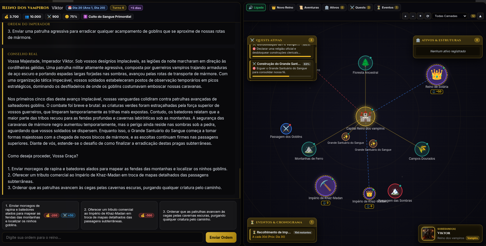

AI RPG Engine: Aetheria
Motor de RPG de Fantasia e Simulação de Reinos com Arquitetura RAG em 4 Níveis, Multi-Provedores de IA e Persistência Relacional.
Visão Geral do Projeto
O AI RPG Engine é um sistema completo de interpretação de papéis e simulação procedural de reinos. O objetivo central é solucionar um dos maiores gargalos dos modelos de linguagem em jogos de longa duração: a perda de contexto, alucinações de regras matemáticas e inconsistência narrativa.
Combinando FastAPI no backend com um motor desacoplado em Python, o sistema implementa persistência transacional em SQLite3 (WAL), um motor vetorial próprio para RAG Episódico e uma interface SPA rica em Vanilla JavaScript e CSS Glassmorphism.
Pilares Arquiteturais & Engenharia
Pipeline de Memória Cognitiva em 4 Níveis
Para suportar campanhas com centenas de turnos sem degradar a janela de contexto, o motor divide a memória em quatro estágios complementares:
- 1. Janela Imediata: Contexto conversacional das interações mais recentes do jogador.
- 2. Estado Estruturado (SQLite WAL): Persistência relacional estrita de recursos, população, tesouro, exército, impostos e eventos periódicos com integridade transacional.
- 3. Memória Episódica Vetorial (RAG): Embeddings semânticos com pontuação de importância (0.0 a 1.0) e similaridade de cosseno para resgatar antecedentes cruciais.
- 4. Compressão Hierárquica de Crônicas: Sumarização periódica automática em capítulos, reduzindo drasticamente o consumo de tokens sem perder o histórico do mundo.
Multi-Provedores & Fallback Automático
Arquitetura com LLMFactory e camada de abstração que permite alternar e realizar fallback automático em caso de rate-limit ou indisponibilidade entre Google Gemini (2.5 Flash), xAI Grok-2, OpenAI GPT-4o-mini e Ollama Local, com garantia de saída estruturada em JSON e validação via Pydantic.
Domínio Puro, TDD e Observabilidade
Desenvolvido estritamente sob os princípios de Clean Architecture e SOLID. A camada de domínio é 100% desacoplada da web, com suíte de testes unitários e de integração em Pytest, além de logs estruturados e contextuais para rastreamento preciso de decisões da IA.
Interface SPA Glassmorphism
HUD moderno em tempo real com acompanhamento de finanças do reino, felicidade pública, mapa vetorial de territórios, diário narrativo de crônicas e retratos dinâmicos de líderes de diferentes facções.
Stack Tecnológica & Padrões
Destaques de Implementação
Cálculo Matemático de Impostos & Economia
Modelagem matemática determinística para arrecadação, moral pública e manutenção militar executada no StateManager a cada turno.
Diagramação Declarativa D2 & Kiro Flow
Documentação viva com diagramas D2 e ciclo rigoroso de especificações (Requirements -> Design -> Tasks -> Tests).
Zero Secrets & Alta Segurança
Gerenciamento centralizado de configurações e logs estruturados estéreis, garantindo que credenciais nunca sejam expostas.